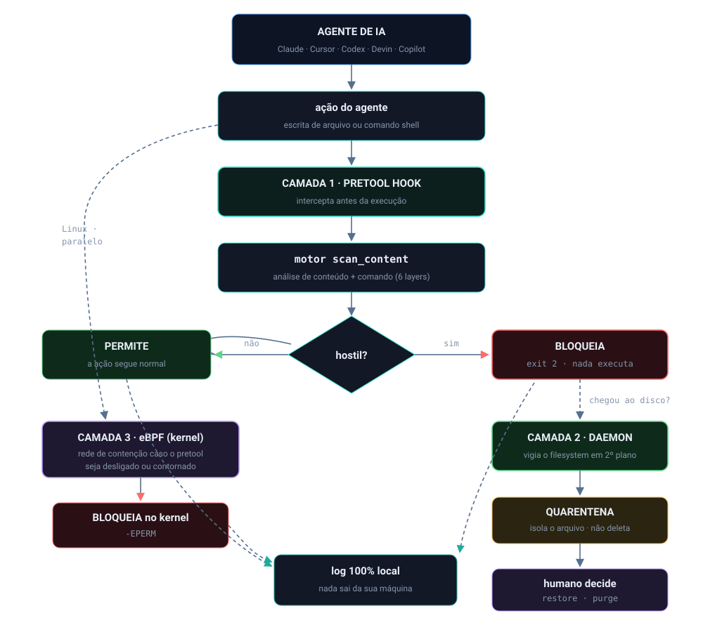

Início/Competências
evidência de estudo autodidataCompetências de engenharia aplicadas no projeto
O Nemesis exercita, na prática, um conjunto amplo de competências: sistemas operacionais, kernel, segurança, Rust e DevSecOps. Cada uma está mapeada ao ponto do código que a evidencia e à página que a explica.

O projeto junta o baixo nível (kernel, eBPF, LSM, Landlock) com a engenharia de software defensiva (Rust fail-closed, regex linear, determinismo) e a análise estática (AST, taint, entropia), amarrados num processo de DevSecOps com gate adversarial. As três camadas (o conceito isolado), a forma como elas se reforçam (a correlação) e o bloqueio real antes da execução (a convergência) são o que cada página detalha.
O conceito isolado: as competências por domínio
Engenharia de sistemas operacionais e baixo nível
| Competência | Evidência no código | Estudo |
|---|---|---|
| Modelo de processos POSIX, stdio, exit code como contrato | hook lê stdin, std::process::exit(2); spawn com stdio nulo | 1 |
| Programação de kernel com eBPF, verifier e BPF-LSM | nemesis-block.bpf.c, mapas, lsm/bprm_check_security | 2 |
| Sandbox sem root e controle de egress (cgroup, Landlock) | landlock.rs::apply_sandbox, lsm/socket_connect, LPM trie | 3 |
Rust e engenharia de software
| Competência | Evidência no código | Estudo |
|---|---|---|
| Workspace, build reprodutível, Cargo.lock commitada | Cargo.toml, --locked no CI | 4 |
| Erro sem exceções (Result/Option) e fail-closed (catch_unwind → exit 2) | main.rs match em fs::read; nemesis-pretool-check-unix.rs::main | 4 |
| Segurança de algoritmo (regex linear, ReDoS) e determinismo | crate regex; MAX_DECODE_DEPTH, faixas de tamanho | 4 |
Análise estática e teoria de linguagens
| Competência | Evidência no código | Estudo |
|---|---|---|
| Parsing e travessia de AST (tree-sitter, padrão Visitor) | ast_scanner.rs::traverse_* | 5 |
| Arquitetura de pipeline em camadas | lib.rs::scan_content | 5 |
| Teoria da informação (entropia) e fluxo de dados (taint) | entropy.rs::shannon_entropy; taint_tracker.rs (3 passadas) | 5 |
Segurança de IA e de aplicações
| Competência | Evidência no código | Estudo |
|---|---|---|
| Integração com agentes (hooks multi-IDE), interceptação | tradução de ferramenta em intenção no pretool | 6 |
| Enforcement determinístico vs probabilístico | compute_severity (função pura) | 6 |
| Defesa contra prompt injection e IDE poisoning | prompt_injection.rs, ide_config_poisoning.rs | 7 |
| Detecção de malware e supply-chain | decoder recursivo + manifest_scanner + visitors AST (método) | 8 |
Arquitetura de defesa e DevSecOps
| Competência | Evidência no código | Estudo |
|---|---|---|
| Defesa em profundidade (3 camadas independentes) | pretool + daemon + eBPF | 9 |
| Modelagem de confiança (corroboração, reversibilidade) | Tier A/B em compute_severity, quarentena | 9 |
| Threat modeling honesto (limites declarados) | self-audit.yml notas, AGENTS.md §2 | 10 |
| Cadeia de build (SLSA, pin de SHA, audit) e observabilidade | self-audit.yml, release.yml, nemesis-doctor, run-pentest.sh | 10 |
Como se correlaciona
Nenhuma dessas competências vale isolada. O exit code (1) só contém porque o fail-closed do Rust (4) garante que até o erro termine em bloqueio; o kernel (2) só age com escopo porque o cgroup (3) sabe qual processo é o agente; a leitura de código (5) só serve porque alimenta a decisão (9); e a decisão só é confiável porque o processo (10) a valida de forma adversarial. A maturidade não está em saber cada peça, está em fazê-las se reforçarem.
Como o Nemesis aplica (a convergência)

Tudo isso converge num único fato observável: um comando destrutivo ou um payload malicioso é barrado com exit 2 (ou -EPERM no kernel) antes de executar, ou um arquivo hostil é movido para a quarentena antes de causar dano. É o que separa um protótipo de uma ferramenta de segurança: a engenharia vira contenção real, reversível e honesta sobre seus limites.